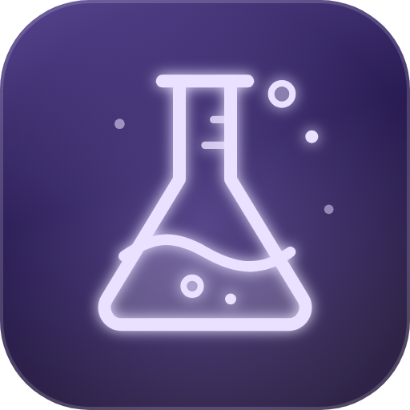

Physikalische Versuche mit den Sensoren deines Smartphones – messen, auswerten, verstehen. 100% lokal.
Die Versuche sind Lernexperimente. Die Sensoren eines Smartphones sind nicht kalibriert; Ergebnisse dienen dem Verständnis und ersetzen keine geeichten Messgeräte. Bitte die Sicherheitshinweise jedes Versuchs beachten und das Smartphone gegen Herunterfallen sichern.
Rohdaten eines Sensors aufzeichnen – für eigene Versuche. Export als CSV für Tabellenkalkulationen.
Dauerton als Schallquelle, z. B. für die Versuche „Doppler-Effekt“ und „Abstandsgesetz“ auf einem zweiten Gerät.
Lautstärke langsam erhöhen (auf 50 % begrenzt). Laute hohe Töne können Gehör und Lautsprecher schädigen.
Jeder ausgewertete Versuch wird automatisch festgehalten – mit Parametern, Messwerten, Hypothese und deiner Notiz.
Teil der WahrZentrale. Messdaten werden nur auf deinem Gerät verarbeitet und gespeichert.